Experimental Setup
Factors
| Factor | Low | High | Unit |
|---|---|---|---|
current_density | 1 | 10 | A/dm2 |
bath_temp_c | 20 | 55 | C |
time_min | 5 | 60 | min |
bath_ph | 2 | 5 | pH |
agitation_rpm | 0 | 200 | rpm |
Fixed: metal = nickel, substrate = mild_steel
Responses
| Response | Direction | Unit |
|---|---|---|
thickness_um | ↑ maximize | um |
adhesion_score | ↑ maximize | pts |
Configuration
Experimental Matrix
The Plackett-Burman Design produces 8 runs. Each row is one experiment with specific factor settings.
| Run | current_density | bath_temp_c | time_min | bath_ph | agitation_rpm |
|---|---|---|---|---|---|
| 1 | 10 | 55 | 60 | 2 | 0 |
| 2 | 1 | 20 | 60 | 5 | 0 |
| 3 | 1 | 55 | 5 | 5 | 0 |
| 4 | 10 | 55 | 60 | 5 | 200 |
| 5 | 1 | 55 | 5 | 2 | 200 |
| 6 | 10 | 20 | 5 | 5 | 200 |
| 7 | 1 | 20 | 60 | 2 | 200 |
| 8 | 10 | 20 | 5 | 2 | 0 |
Step-by-Step Workflow
Preview the design
Generate the runner script
Execute the experiments
Analyze results
Get optimization recommendations
Generate the HTML report
Features Exercised
| Feature | Value |
|---|---|
| Design type | plackett_burman |
| Factor types | continuous (all 5) |
| Arg style | double-dash |
| Responses | 2 (thickness_um ↑, adhesion_score ↑) |
| Total runs | 8 |
Analysis Results
Generated from actual experiment runs using the DOE Helper Tool.
Response: thickness_um
Top factors: current_density (34.7%), agitation_rpm (29.5%), bath_ph (26.3%).
Pareto Chart
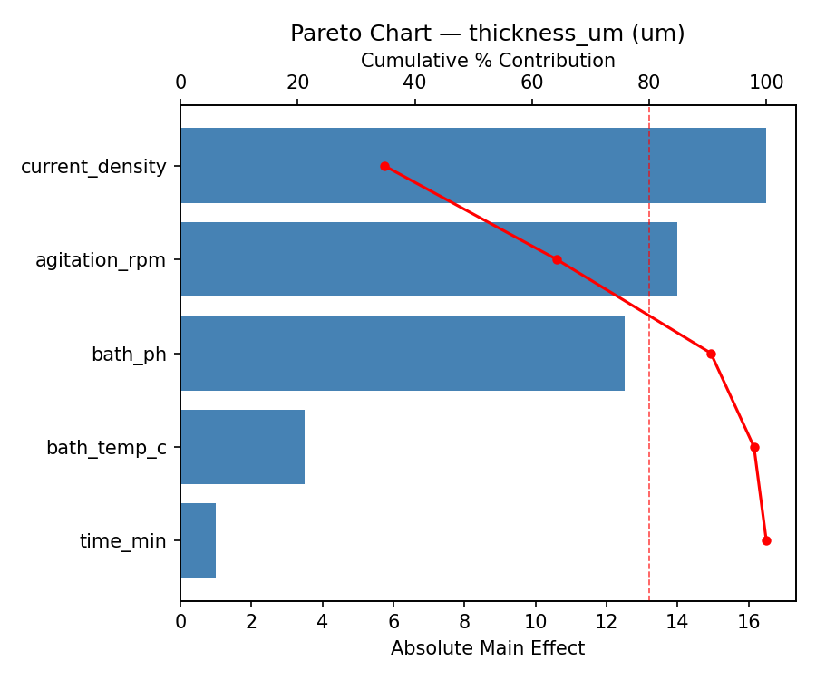
Main Effects Plot
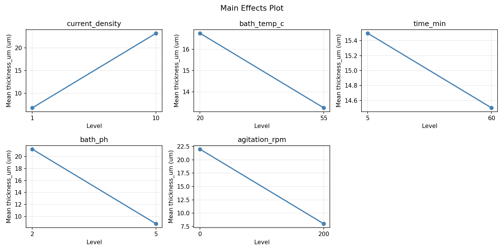
Response: adhesion_score
Top factors: bath_temp_c (35.5%), bath_ph (19.0%), agitation_rpm (19.0%).
Pareto Chart
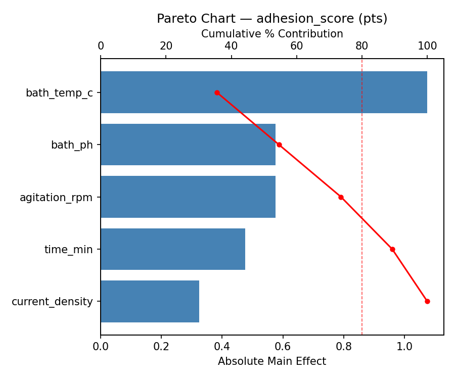
Main Effects Plot
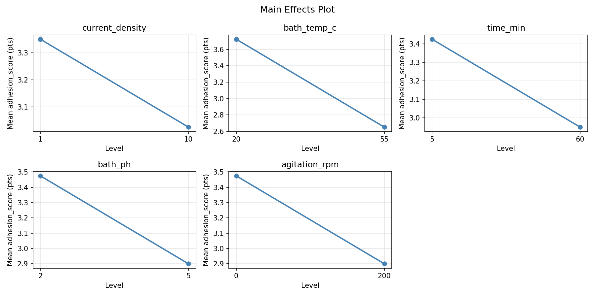
Response Surface Plots
3D surfaces fitted with quadratic RSM. Red dots are observed data points.
adhesion score bath ph vs agitation rpm
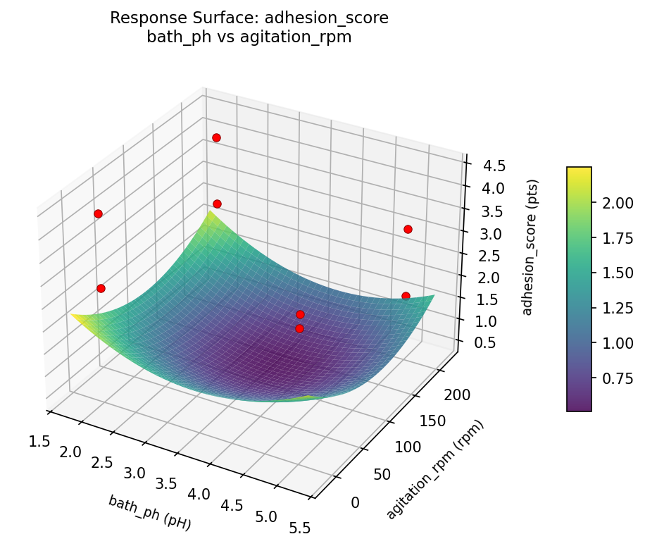
adhesion score bath temp c vs agitation rpm
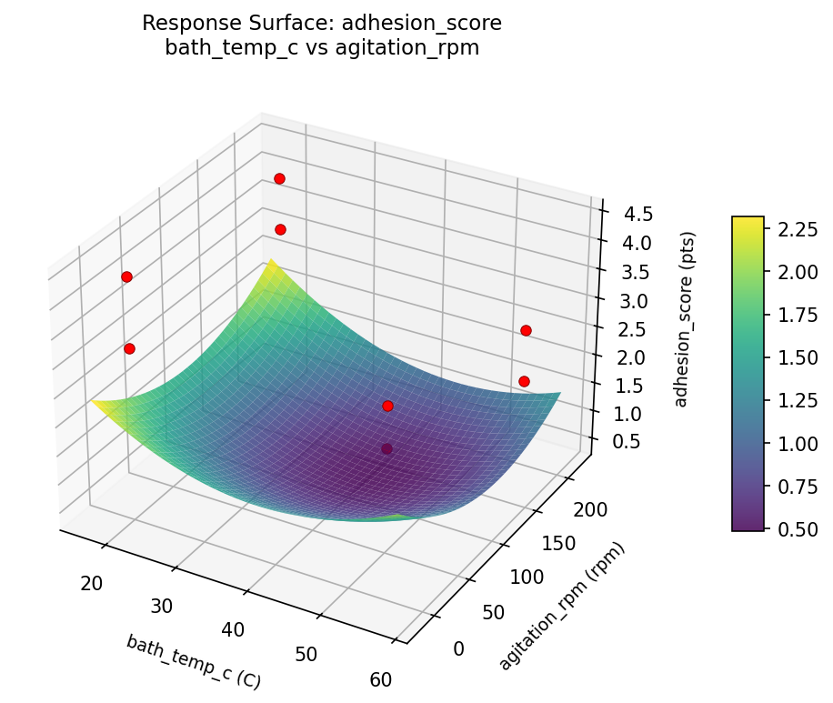
adhesion score bath temp c vs bath ph

adhesion score bath temp c vs time min

adhesion score current density vs agitation rpm

adhesion score current density vs bath ph

adhesion score current density vs bath temp c
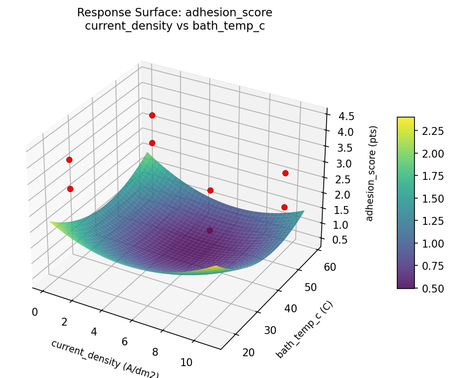
adhesion score current density vs time min
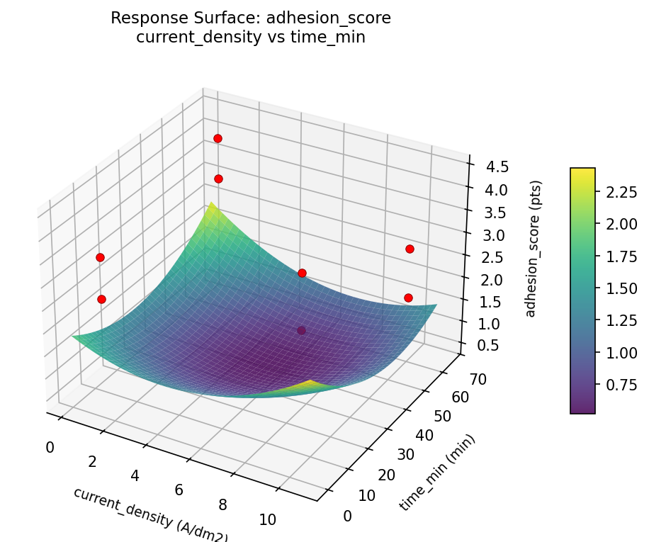
adhesion score time min vs agitation rpm

adhesion score time min vs bath ph
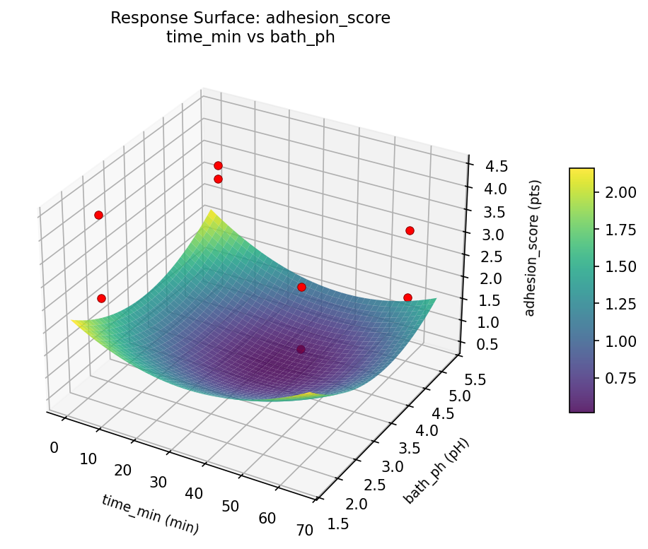
thickness um bath ph vs agitation rpm
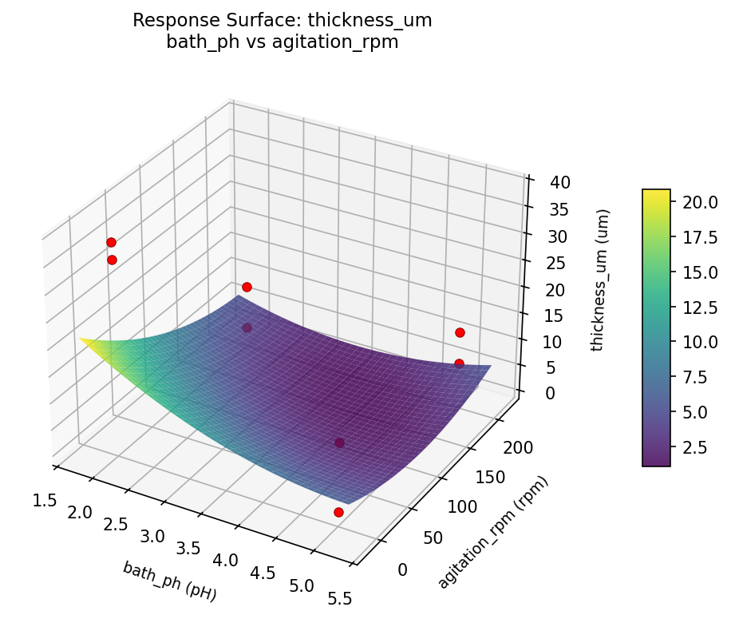
thickness um bath temp c vs agitation rpm
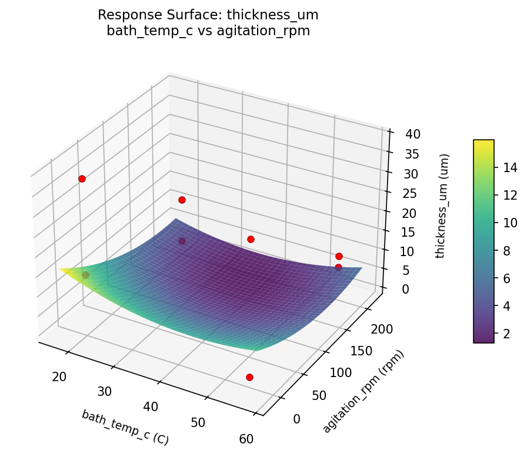
thickness um bath temp c vs bath ph

thickness um bath temp c vs time min
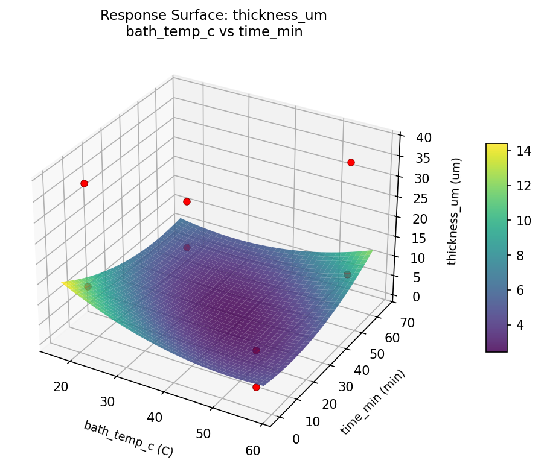
thickness um current density vs agitation rpm

thickness um current density vs bath ph
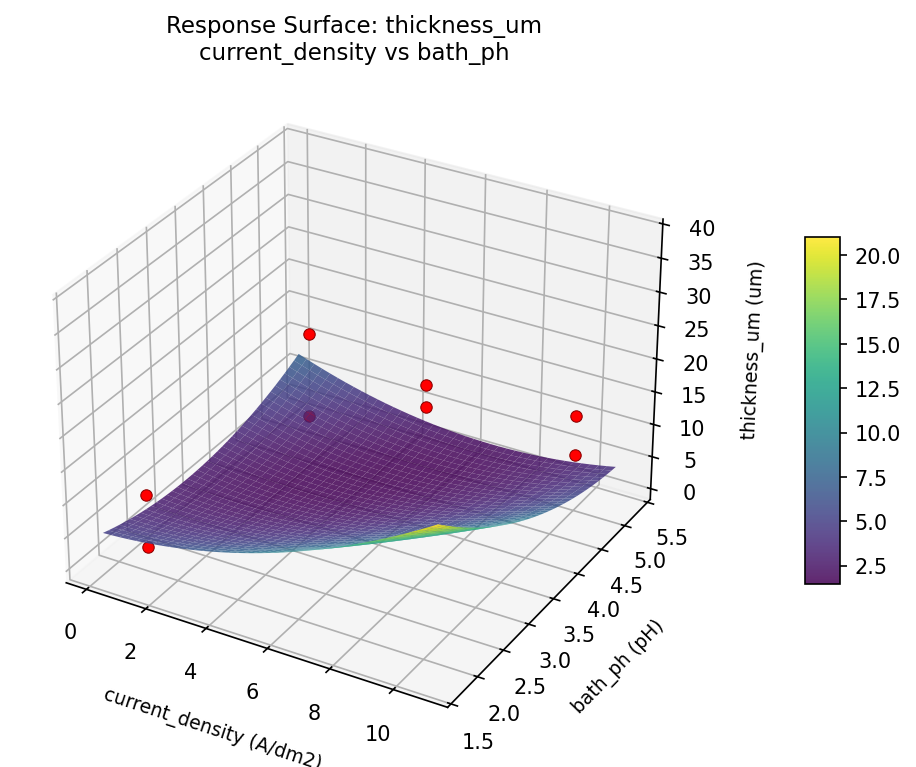
thickness um current density vs bath temp c
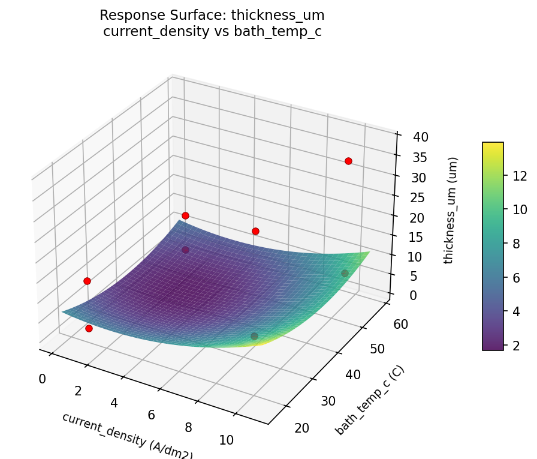
thickness um current density vs time min

thickness um time min vs agitation rpm
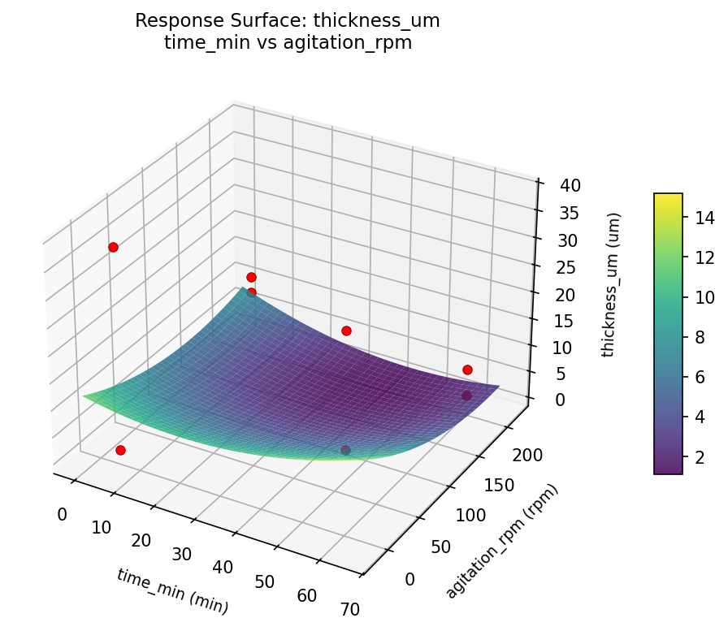
thickness um time min vs bath ph